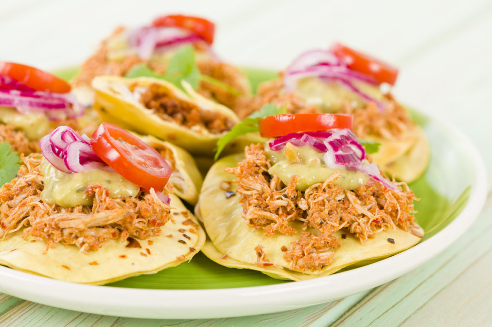

El panucho tradicional consiste en una tortilla de maíz a la que se le hace un pequeño corte en la orilla y se rellena de frijol colado. Hecho esto, se fríe en aceite o manteca.

Tulum es la puerta de entrada a la Reserva de la Biósfera Sian Ka'an que fue declarada Patrimonio de la Humanidad por la UNESCO en 1987, un ecosistema de los más exuberantes del planeta que incluye playas, arrecifes de coral, una abundante selva tropical, dunas y cenotes.

Notas relevantes:
El nombre del estado fue otorgado gracias a Andrés
Quintana Roo, político, escritor, poeta y
periodista mexicano. Fue una de las máximas
figuras de la Independencia Mexicana y es uno de
los firmantes del Acta de Independencia de
México.
Quintana Roo está dividido en 11
municipios diferentes: Cozumel, Felipe Carrillo
Puerto, Isla Mujeres, Othón P. Blanco, Benito
Juárez, José María Morelos, Lázaro Cardenas,
Solidaridad, Tulum, Bacalar y Puerto Morelos.
Es el onceavo estado con mayor cantidad de
pobladores con 2,368,467 habitantes, además tiene
la mayor tasa de crecimiento poblacional a nivel
nacional con un 3.5%.